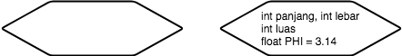
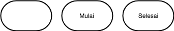
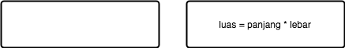
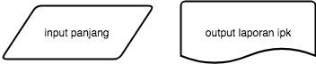
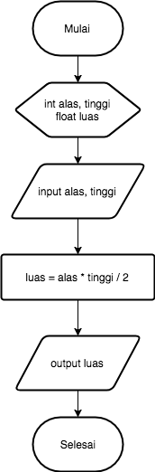
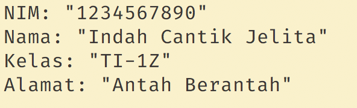
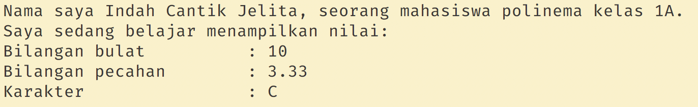
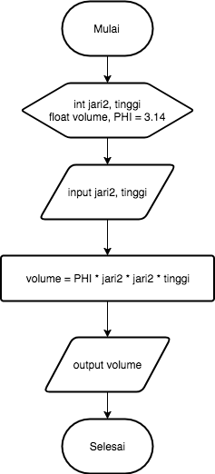

Jobsheet 3 - Syntax
Tujuan
- Mahasiswa memahami sintaks dasar bahasa pemrograman Java
- Mahasiswa mampu mengimplementasikan tipe data, variabel, input-output ke dalam program bahasa Java.
- Mahasiswa memahami konsep alur kontrol sequence pada program.
Alat dan Bahan
- PC/Laptop
- Text Editor (Sublime Text, VSCode, Notepad++)
- JDK
Ulasan Materi
Syntax
Dalam membuat sebuah program, kita harus mengikut struktur dasar dari bahasa pemrograman. Ada beberapa komponen yang hampir selalu muncul setiap kali kita membuat program bahasa Java. Komponen-komponen tersebut antara lain:
- Deklarasi
class. - Fungsi
main() - Deklarasi variabel.
- Perintah (statement).
- Keyword
import. - Komentar
- Kurung kurawal
Berikut adalah contoh kode program beserta penjelasan strukturnya:
// semua baris yang diawali dengan tanda // adalah komentar
// import untuk menyertakan fungsi-fungsi dari sebuah library
import java.util.Scanner;
// deklarasi class
class PersegiPanjang {
// Fungsi main()
public static void main(String args[]) { // tubuh fungsi main diawali dengan kurung kurawal
// deklarasi variabel dengan nama panjang, lebar, luas
// dengan tipe data bilangan bulat
int panjang;
int lebar;
int luas;
// statement/perintah untuk membuat program menghitung
// luas persegi panjang
panjang = 5;
lebar = 3;
luas = panjang * lebar;
System.out.println("Luas persegi panjang: " + luas);
} // kurung kurawal tutup
} // kurung kurawal tutup
Sebelum program ditulis, pada umumnya dibuat flowchart. Sebuah gambar yang berisi alur sebuah program. Gambar flowchart digunakan sebagai acuan serta dapat juga digunakan untuk menyampaikan alur program kepada orang lain yang menggunakan bahasa pemrograman yang berbeda.
Deklarasi Class
Dalam bahasa pemrograman java, sebuah program harus dibungkus yang namanya
class. Pada umumnya penamaannya sesuai dengan program yang dijalankan, seperti
contoh program menghitung luas persegi panjang dinamakan class PersegiPanjang.
Atau bisa juga lebih spesifik seperti LuasPersegiPanjang. Secara konvensional
penamaan class harus diawali dengan huruf kapital. Dan apabila lebih dari satu
kata, kata berikutnya disambung dengan huruf kapital juga.
Contoh:
// penamaan class yg benar
class LuasPersegiPanjang {
}
// penamaan class yg salah
class luas_persegi_panjang {
}
// penamaan class yg salah
class luaspersegipanjang {
}
Fungsi Utama/ Fungsi main()
Agar program java dapat dijalankan, harus terdapat fungsi main(). Program yang
tidak memiliki fungsi ini, maka tidak dapat dijalankan secara langsung. Ketika
fungsi main dipanggil, akan dieksekusi perintah-perintah/statement yang terdapat
dalam blok kode. Fungsi main dibuka dengan kurung kurawal buka { dan kurung
kurawal tutup }. Secara garis besar, isi dari fungsi main() pada program
menghitung luas persegi panjang adalah:
- Perintah untuk memberikan nilai
panjangdanlebardnegan5dan3. - Perintah untuk menghitung luas segiempat.
- Perintah untuk menampilkan luas yang telah dihitubg ke layar.
Variabel
Variabel adalah tempat untuk menyimpan data. Deklarasi variabel adalah sebuah perintah agar komputer menyediakan variabel yang akan kita pakai. Pendeklarasian variabel harus diawali dengan tipe variabelnya, nama variabelnya, kemudian diakhiri dengan titik-koma.
tipe variabel = nilai;
Beberapa tipe variabel yang sering kita gunakan:
- Variabel integer (int) untuk menyimpan bilangan bulat/tanpa koma. Contoh: 12, 1, 76, 100, 99.
- Variabel float (float) untuk menyimpan bilangan berkoma/real. Contoh: 12.8, 1.5, 3.14 (dalam bahasa pemrograman umumnya tanda titik digunakan untuk koma).
- Variabel String untuk menyimpan karakter/kata/kalimat, bisa berupa huruf ataupun angka. Contoh: "Polinema", "Budi", "Berat badan 60 kg", "Rp. 500.000".
Dalam memberi nama variabel ada beberapa aturan yang harus dipenuhi, antara lain:
- Diawali dengan huruf atau karakter underscore
_ - Nama variabel bersifat case sensitive (huruf besar dianggap berbeda dengan huruf kecil).
- Tidak boleh menggunakan keyword. (lihat tabel keyword)
- Tidak boleh menggunakan spasi (sebagai pengganti dapat digunakan tanda
underscore
_(snakecase) atau penggunaan huruf besar pada awal kata berikutnya (camelcase)) Tidak boleh menggunakan karakter khusus seperti
<,>,*,?,=dan sebagainya.Beberapa
keywordyang tidak boleh digunakan sebagai nama variabel:
abstract |
default |
if |
private |
this |
assert |
do |
implements |
protected |
throw |
boolean |
double |
import |
public |
throws |
break |
else |
instanceof |
return |
transient |
byte |
enum |
int |
short |
try |
case |
extends |
interface |
static |
void |
catch |
final |
long |
strictfp |
volatile |
char |
finally |
native |
super |
while |
class |
float |
new |
switch |
|
continue |
for |
package |
synchronized |
Selengkapnya, tipe-tipe variabel yang sering dipakai dalam pemrograman Java ada pada tabel berikut ini:
| Type | Values | Default | Size | Range |
|---|---|---|---|---|
| byte | signed integers | 0 | 8 bits | -128 to 127 |
| short | signed integers | 0 | 16 bits | -32768 to 32767 |
| int | signed integers | 0 | 32 bits | -2147483648 to 214783647 |
| long | signed integers | 0 | 64 bits | -9223372036854775808 to 9223372036854775807 |
| float | IEEE 754 floating point | 0.0 | 32 bits | approximately ±3.40282347E+38F |
| double | IEEE 754 floating point | 0.0 | 64 bits | approximately ±1.79769313486231570E+308 |
| char | Unicode character | \u0000 | 16 bits | \u0000 to \uFFFF |
| boolean | true, false | false | 1 bit used in 32 bit integer | NA |
Selain harus memperhatikan jenis tipe data yang digunakan, tipe data juga mempunyai penulisan nilai yang berbeda. Sebagai contoh penulisan nilai tipe data char harus diapit dengan tanda
'(petik satu). Variabel string harus diapit tanda"(petik dua). Dalam penulisan bilangan pecahan digunakan tanda.(titik) bukan,(koma).
Deklarasi variabel pada flowchart biasanya disimbolkan dengan tanda persegi panjang dengan ujung segi tiga. Penulisan deklarasi umumnya berisi tipe data dan nama variabelnya. Selain deklarasi dapat juga dilakukan pemberian nilai sekaligus.

Tetapi sebelum deklarasi, sebuah flowchart biasanya diakhiri dengan tanda terminator. Tanda terminator dapat berisi tulisan Mulai atau Start yang menunjukkan awal dari flowchart. Dan diakhiri dengan Selesai atau End.

Secara umum, format deklarasi variabel dapat dinyatakan sebagai berikut:
tipe_data nama_variabel;
tipe_data nama_variabel = nilai_awal;
Contoh:
// semua baris yang diawali dengan tanda // adalah komentar
// deklarasi variabel bilangan dengan tipe data int
int bilangan;
// deklarasi > 1 variabel dengan tipe data sama dipisah dengan ,
float volume, luas;
// deklarasi variabel dengan langsung memberi nilai awal
float PHI = 3.14;
char kelas = 'A';
String nama = "Wiro Sableng";
Sequence/Statement
Perintah/statement digunakan untuk memerintahkan komputer untuk melakukan sesuatu. Contoh, pada program menghitung luas persegi panjang sebelumnya, ada beberapa statemen:
- Perintah
panjang = 10;memerintahkan komputer untuk mengisi variabelpanjangdengan nilai10. Begitu juga dengan perintahlebar = 5;. Statement semacam ini dikenal dengan istilah assignment atau penugasan. - Perintah
luas = panjang * lebar;memerintahkan komputer untuk menghitung hasil perkalian daripanjangdanlebar, lalu menyimpannya ke dalam variabelluas. - Perintah
System.out.println("Luas persegi panjang: " + luas);memerintahkan komputer untuk menamppilkan isi variabelluaske layar.
Setiap statement harus diakhiri dengan tanda semicolon (;), kecuali
statemen-statemen tertentu seperti if(), for(), while(), deklarasi
class dan sebagainya.
Dalam flowchart statement biasanya identik dengan proses. Kecuali proses input/output mempunyai simbol proses yang berbeda. Simbol dan contoh penulisan proses pada flowchart dinotasikan dengan tanda persegi panjang.

Keyword import
Digunakan untuk memanggil library/fungsi-fungsi yang telah disediakan oleh
bahasa Java. Perintah import java.util.Scanner; digunakan untuk memanggil
library Scanner yang diperlukan untuk menerima input dari keyboard yang akan
dibahas pada bagian input.
Kurung Kurawal
Kurung kurawal berfungsi untuk memberitahu komputer bahwa perintah-perintah di
dalamnya merupakan satu kesatuan. Singkatnya, kurung kurawal kita pakai untuk
membuat sekumpulan perintah (compound statement/block). Selain tanda kurung
kurawal, ada juga tanda kurung siku [] (dibahas pada materi Array) serta tanda
kurung () (dibahas pada materi fungsi).
Output
Setiap program pasti menghasilkan output. Salah satu cara untuk menampilkan output adalah dengan menampilkannya ke layar. Untuk menampilkan ke layar, ada beberapa cara:
System.out.print("Hello World!");Perintah ini akan menampilkan kataHello World!ke layar, atau apapun yang kita tuliskan di dalam tanda petik dua.System.out.println("Hello World!");Perintah ini akan menampilkan kataHello World!ke layar, atau apapun yang kita tuliskan di dalam tanda petik, sekaligus memberi perintah garis di akhir kata/kalimat.System.out.println(panjang);Perintah ini akan menampilkan isi variabelpanjangke layar. Perhatikan bahwa untuk menampilkan isi variabel tidak perlu menggunakan tanda".System.out.println("Panjang segi empat: " + panjang);Perintah ini akan menampilkan kalimatPanjang segi empat:kemudian disambung dengan isi variabelpanjangke layar. Perhatikan untuk menyambung kalimat dengan isi variabel, digunakan tanda+(concatenation).System.out.printf("%s dan %s", panjang, lebar)Perintah ini akan menampilkan pesan berformat (silahkan lihat tabel string formatting, hanya disajikan yang sering digunakan). Pada string format dapat juga digunakan untuk menentukan berapa digit angka yang akan ditampilkan, Contoh:%.1fakan menampilkan 1 digit di belakang koma.
| Specifier | Type |
|---|---|
| %d | integer (bilangan bulat) |
| %f | floating point |
| %s | String |
| % c | character |
Pada output program terdapat beberapa karakter khusus. Karakter-karakter ini dikenal dengan istilah escape sequence. Karakter-karakter yang umum digunakan dapat dilihat pada tabel berikut ini:
| Escape Sequence | Keterangan |
|---|---|
\n |
Baris baru |
\\ |
Karakter \ |
%% |
Karakter % |
\t |
Karakter tab |
\" |
Karakter " |
Input
Untuk membaca input dari keyboard, pertama-tama kita pastikan bahwa library
Scanner sudah kita sertakan. Caranya adalah dengan menuliskan perintah import
java.util.Scanner; di baris paling atas dari kode program kita. Selanjutnya
kita tuliskan perintah deklarasi Scannerberikut ini di dalam fungsi main()
Selanjutnya, tergantung dari jenis input yang akan kita masukkan, berupa bilangan bulat (int), bilangan pecahan (float/double) atau karakter (String).
- Jika input berupa bilangan bulat, maka perintahnya adalah:
nextInt(); - Jika input berupa bilangan pecahan, maka perintahnya adalah:
nextFloat(); - Jika input berupa karakter , maka perintahnya adalah:
nextLine();
Contoh:
- Input berupa bilangan bulat:
import java.util.Scanner;
class Hello {
public static void main(String args[]) {
Scanner sc = new Scanner(System.in);
int age;
System.out.print("Masukkan usia anda: ");
age = sc.nextInt();
System.out.println("Usia anda adalah: " + age);
}
}
- Input berupa dua buah bilangan:
import java.util.Scanner;
class Hello {
public static void main(String args[]) {
Scanner sc = new Scanner(System.in);
int panjang, lebar;
System.out.print("Masukkan panjang: ");
panjang = sc.nextInt();
System.out.println("Masukkan lebar: ");
lebar = sc.nextInt();
System.out.println("Nilai dari panjang: " + panjang);
System.out.println("Nilai dari lebar: " + lebar);
}
}
Catatan
Jika di dalam program terdapat beberapa input yang berbeda-beda tipe datanya, maka deklarasi scanner harus dibuat sejumlah tipe data input yang berbeda tersebut. Misalkan terdapat satu input berupa bilangan bulat dan satu input berupa String, maka perlu dibuat dua deklarasi scanner (satu untuk int dan satu untuk String)
Contoh:
import java.util.Scanner;
class Hello {
public static void main(String args[]) {
Scanner scString = new Scanner(System.in);
Scanner scInt = new Scanner(System.in);
String nama;
int usia;
System.out.println("Masukkan nama anda: ");
nama = sc.nextLine();
System.out.print("Masukkan usia anda: ");
usia = sc.nextInt();
System.out.println("Nama anda: " + nama);
System.out.println("Usia anda: " + usia);
}
}
Untuk simbol flowchart input output dinotasikan dengan simbol jajar genjang. Simbol jajar genjang digunakan jika berkaitan dengan data. Tetapi jika input atau output menggunakan dokumen (file) digunakan simbol yang berbeda.

Praktikum
Praktikum 1
- Buka text editor (Sublime, VSCode dll) anda.
- Buat file baru, beri nama
Hitung.java - Buat class dengan nama
Hitung. - Tuliskan struktur dasar bahasa Java yang berisi fungsi
main(). - Tambahkan import library
Scannerdi bagian paling atas kode program.
import java.util.Scanner;
- Deklarasikan variabel
scdengan tipeScanner.
Scanner sc = new Scanner(System.in);
- Buatlah variabel bertipe
int, kemudian beri nama variabel tersebut denganangka;
int angka;
- Tambahkan kode berikut ini untuk menerima input dari keyboard.
System.out.print("Masukkan angka: ");
angka = sc.nextInt();
- Tambahkan kode berikut ini untuk menampilkan isi dari variabel angka.
System.out.println("Isi variabel angka: " + angka);
- Lakukan kompilasi dengan menggunakan perintah
javackemudian jalankan program. Amati apa yang terjadi!
Praktikum 2
- Buatlah file baru dengan nama
Segitiga.java Amati flowchart program untuk menghitung luas segitiga berikut ini:

Buatlah struktur dasar program java yang terdiri dari fungsi
main()- Tambahkan library scanner
- Buat deklarasi scanner dengan nama
scanner Buat variabel dengan tipe
intuntukalasdantinggi, kemudian variabel dengan tipefloatuntukluas.int alas, tinggi; float luas;Tuliskan perintah untuk menginputkan alas dan tinggi.
System.out.print("Masukkan alas: "); alas = scanner.nextInt(); System.out.print("Masukkan tinggi: "); tinggi = scanner.nextInt();Tuliskan perintah berikut untuk menghitung luas segitiga.
luas = alas * tinggi / 2;Tampilkan isi variabel luas.
System.out.println("Luas segitiga: " + luas);Lakukan kompilasi kemudian jalankan program. Amati apa yang terjadi!
Praktikum 3
- Buat file baru dan beri nama
Biodata.java - Buat struktur dasar program java yang berisi fungsi
main() - Tambahkan library
Scannerdengan pernyataan import. - Buatlah dua deklarasi variabel untuk
Scanner. Satu untuk input dengan tipeintdan satu untukString.Scanner scInt = new Scanner(System.in); Scanner scString = new Scanner(System.in); - Buat variabel dengan tipe String untuk
namadannoHP, kemudian variabel dengan tipeintuntukusiadantinggiBadan.String nama, noHp; int usia, tinggiBadan; Tuliskan kode untuk menginputkan nama, noHP dan tinggiBadan.
System.out.print("Masukkan nama: "); nama = scString.nextLine(); System.out.print("Masukkan no HP: "); noHp = scString.nextLine(); System.out.print("Masukkan usia: "); usia = scInt.nextInt(); System.out.print("Masukkan tinggi badan: "); tinggiBadan = scInt.nextInt();- Tuliskan kode untuk menampilkan biodata
System.out.println("Nama: " + nama); System.out.println("No. HP: " + noHp); System.out.println("Usia: " + usia); System.out.println("Tinggi badan: " + tinggiBadan); - Lakukan kompilasi dan jalankan program, amati apa yang terjadi.
Pertanyaan
Jawablah pertanyaan berikut ini.
- Apa yang dimaksud dengan variabel?
- Jelaskan masing-masing kegunaan tipe variabel berikut ini:
intfloatString
- Apa kegunaan dari perintah berikut:
int angka;String alamat;int panjang = 100;import java.util.Scanner;Scanner sc = new Scanner(System.in);System.out.print("Isi variabel angka: " + angka);angka = sc.nextInt();alamat = sc.nextLine();
- Amati kode program berikut. Baris berapa kode tersebut salah? Perbaiki kesalahan tersebut!
import java.util.Scanner;
class Hello {
public static void main(String args[]) {
Scanner sc = new Scanner(System.in);
float usia;
System.out.print("Masukkan usia anda: ");
umur = sc.nextInt();
System.out.println("Usia anda: " + usia);
}
}
Tugas
Kerjakan tugas sesuai dengan instruksi berikut ini.
Dengan menggunakan fungsi
System.out.println()dan penggunaan karakter escape sequence, buatlah program untuk menampilkan biodata anda dengan format seperti gambar berikut ini:
Perhatikan tabel di bawah ini:
| Nama Variabel | Tipe Data | Nilai Awal |
|---|---|---|
| nama | Kalimat | (Nama lengkap anda, Contoh: Indah Cantik Jelita) |
| tingkat | Bilangan bulat | 1 |
| kelas | Karakter | (Kelas anda, Contoh: Z) |
| bilanganBulat | Bilangan bulat | 10 |
| bilanganPecahan | Bilangan pecahan | 3.33333 |
| karakter | karakter | C |
Dari informasi tabel tersebut, buatlah program untuk menampilkan hasil seperti pada gambar!

Untuk membuat output rata, anda dapat menggunakan karakter tab (silahkan lihat simbol escape sequence)
Perhatikan baik-baik diagram flowchart program menghitung volume tabung berikut ini:

Implementasikan flowchart yang telah dirancang ke dalam program dengan menggunakan bahasa pemrograman Java!